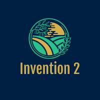

Let's Explore The Stories Behind The Mindblowing Inventions Done By Some Real Legends
Do Re Mi What Fa Si Ti Doi Nemo Do Re Mi What Fa Si Ti Doi Nemo
E La Yo Na Ti Do Pa Pa Noah Do Re Mi What Fa Si Ti Doi Nemo
No way! Hey Hey, me ok! Do Re Mi What Fa Si Ti Doi Nemo
Let's Study About The Invention Of Electricity

Michael Faraday
Do You Know The Story Behind Invention Of Electricity
In 1831, Faraday discovered electromagnetic induction, the principle behind the electric transformer and generator. This discovery was crucial in allowing electricity to be transformed from a curiosity into a powerful new technology.
A Brief History of the Electricity
Electricity is a form of energy and it occurs in nature, so it was not “invented.” As to who discovered it, many misconceptions abound. Some give credit to Benjamin Franklin for discovering electricity, but his experiments only helped establish the connection between lightning and electricity, nothing more. The truth about the discovery of electricity is a bit more complex than a man flying his kite. It actually goes back more than two thousand years and that was the beginning of the history of electricity. In about 600 BC, the Ancient Greeks discovered that rubbing fur on amber (fossilized tree resin) caused an attraction between the two – and so what the Greeks discovered was actually static electricity. Additionally, researchers and archeologists in the 1930s discovered pots with sheets of copper inside that they believe may have been ancient batteries meant to produce light at ancient Roman sites. Similar devices were found in archeological digs near Baghdad meaning ancient Persians may have also used an early form of batteries. But by the 17th century, many electricity-related discoveries had been made, such as the invention of an early electrostatic generator, the differentiation between positive and negative currents, and the classification of materials as conductors or insulators. In the year 1600, English physician William Gilbert used the Latin word “electricus” to describe the force that certain substances exert when rubbed against each other. A few years later another English scientist, Thomas Browne, wrote several books and he used the word “electricity” to describe his investigations based on Gilbert’s work. In 1752, Ben Franklin conducted his experiment with a kite, a key, and a storm. This simply proved that lightning and tiny electric sparks were the same things. Italian physicist Alessandro Volta discovered that particular chemical reactions could produce electricity, and in 1800 he constructed the voltaic pile (an early electric battery) that produced a steady electric current, and so he was the first person to create a steady flow of electrical charge. Volta also created the first transmission of electricity by linking positively-charged and negatively-charged connectors and driving an electrical charge, or voltage, through them. That concept changes the history of electricity. In 1831 electricity became viable for use in technology when Michael Faraday created the electric dynamo (a crude power generator), which solved the problem of generating an electric current in an ongoing and practical way. Faraday’s rather crude invention used a magnet that was moved inside a coil of copper wire, creating a tiny electric current that flowed through the wire. This opened the door to American Thomas Edison and British scientist Joseph Swan who each invented the incandescent filament light bulb in their respective countries in about 1878. Previously, light bulbs had been invented by others, but the incandescent bulb was the first practical bulb that would light for hours on end. Swan and Edison later set up a joint company to produce the first practical filament lamp, and Edison used his direct-current system (DC) to provide power to illuminate the first New York electric street lamps in September 1882. Later in the 1800’s and early 1900’s Serbian American engineer, inventor, and all-around electrical wizard Nikola Tesla became an important contributor to the birth of commercial electricity. He worked with Edison and later had many revolutionary developments in electromagnetism, and had competing patents with Marconi for the invention of the radio. He is well known for his work with alternating current (AC), AC motors, and the polyphase distribution system. Later, American inventor and industrialist George Westinghouse purchased and developed Tesla’s patented motor for generating alternating current, and the work of Westinghouse, Tesla, and others gradually convinced American society that the future of electricity lay with AC rather than DC. Others who worked to bring the use of electricity to where it is today include Scottish inventor James Watt, Andre Ampere, a French mathematician, and German mathematician and physicist George Ohm. Finally, in the history of electricity, it was not just one person who discovered electricity. While the concept of electricity was known for thousands of years, when it came time to develop it commercially and scientifically, there were several great minds working on the problem at the same time.